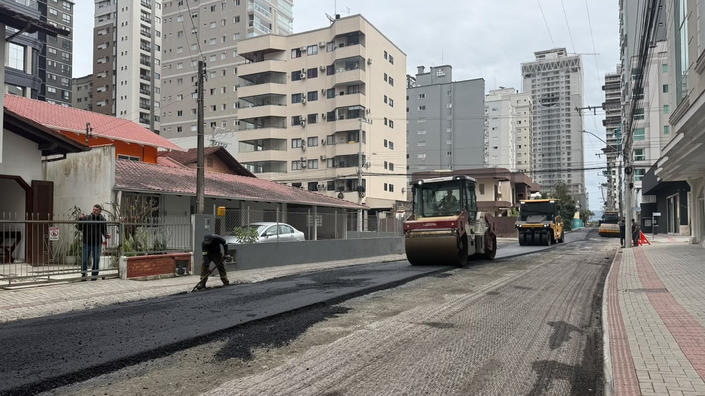

Itapema · Poder Público
Itapema · Poder PúblicoO orçamento de Itapema passou de R$ 1 bilhão, e metade do aumento do ano foi para infraestrutura urbana
De onde vem o dinheiro que banca as obras de rua.
A Prefeitura de Itapema anunciou na sexta-feira, 18, que a Rua 282, na Meia Praia, entrou na etapa de pavimentação, depois de passar por drenagem, nivelamento e fresagem. Juntando os anúncios do programa Avança Itapema que trazem nome e número de rua chegando ao asfalto, a 282 é a nona via de 2026 e a primeira com endereço na Meia Praia. Cinco das outras oito estão no Morretes. A rua já aparecia na lista de lançamento do programa, de 31 de julho de 2025, só que no grupo das que receberiam tapa-buraco.
Em 30 segundos · Modo de Leitura, formato original Santa Informa
A Rua 282 está recebendo asfalto.
Ela fica na Meia Praia, em Itapema.
O anúncio é de sexta-feira, 18.
Antes do asfalto veio drenagem.
Depois nivelamento e fresagem.
A obra é do programa Avança Itapema.
Contamos as ruas do programa em 2026.
Deu nove ruas com nome e número.
A 282 é a nona da lista.
E a primeira da Meia Praia no ano.
Cinco das nove estão no Morretes.
Duas estão na Várzea.
Uma é a estrada do Sertão do Trombudo.
O programa nasceu em 31 de julho de 2025.
Foi anunciado com mais de R$ 30 milhões.
Era só a primeira fase.
A 282 já estava naquela lista.
Mas ali era para tapa-buraco.
Agora é asfalto novo.
Entre uma coisa e outra passou mais de um ano.
A Prefeitura não diz o custo da rua.
Nem o tamanho do trecho.
Nem quando termina.
Quem mora na Meia Praia e está na lista de 2025 segue sem data.
InfraestruturaPublicada em Redação Santa Informa

A Prefeitura de Itapema informou na sexta-feira, 18 de setembro, que a Rua 282, no bairro Meia Praia, entrou na etapa de pavimentação pelo programa Avança Itapema. Antes do asfalto a via passou por drenagem pluvial, nivelamento e fresagem. Segundo o secretário de Obras e Serviços Públicos, Jean do Idimar, chegar à pavimentação quer dizer que o trabalho de infraestrutura anterior está feito. Juntando os anúncios do programa que dão nome e número à rua que chegou ao asfalto, a 282 é a nona via de 2026, e a primeira com endereço na Meia Praia. Cinco das outras oito estão no Morretes.
A conta é nossa e sai do próprio site da Prefeitura. Rua 706, na Várzea, em 6 de janeiro. Rua 438, no Morretes, em 15 de abril. Rua 422, no Morretes, em 28 de abril. Trecho final da Rua 700, na Várzea, em 21 de maio. Rua 444, no Morretes, em 25 de maio. Rua 416, no Morretes, em 10 de junho. Estrada Geral do Sertão do Trombudo, em 31 de julho. Trecho da Rua 420, no Morretes, em 25 de agosto. E agora a 282, na Meia Praia. Contamos só os anúncios dedicados a uma rua. Os boletins semanais citam outras vias no asfalto, como a Marginal Oeste e a Rua 700B1, sem anúncio próprio, então o número real é igual ou maior que nove, nunca menor.
O Avança Itapema foi apresentado em 31 de julho de 2025, com investimento anunciado de mais de R$ 30 milhões só na primeira fase, e as primeiras máquinas saíram no dia 1º de agosto. Aquele anúncio trazia uma lista de ruas separada por tipo de serviço. A 282 estava lá, junto com a 244, 264, 270, 272, 284, 286, 288, 294 e 302, todas da Meia Praia, no grupo das que iam receber tapa-buraco. Os recapeamentos completos começaram por outro lado da cidade, pelas ruas 246C, 902B, 810, 1204, 308A, 250 e 406C, no Morretes, e por um trecho da Marginal Oeste. Ou seja, a rua saiu do remendo para o asfalto novo, e entre uma coisa e outra passou um ano, um mês e meio.
A conta que banca obra de rua, drenagem e orla chama-se Infraestrutura Urbana. No balanço que a Prefeitura entrega todo ano ao Tesouro Nacional, ela aparece assim, em despesa liquidada: R$ 73,9 milhões em 2022, R$ 118,7 milhões em 2023, R$ 90,9 milhões em 2024 e R$ 54,3 milhões em 2025, o menor dos quatro anos. O programa começou em agosto de 2025, então cinco meses de Avança Itapema estão dentro desse último número. Para 2026 o quadro é outro: o orçamento autorizado para a linha chegou a R$ 182,3 milhões em junho, e até lá a cidade tinha liquidado R$ 20,8 milhões, como mostramos na matéria sobre o orçamento que passou de R$ 1 bilhão. O ano de 2026 só fecha nesse balanço em 2027.
O resumo de 30 segundos está no topo e a versão completa é o texto acima. Aqui ficam as três leituras da casa sobre o mesmo assunto.
Clara, a otimista
Rua com asfalto novo muda a vida de quem mora nela de um jeito que não aparece em foto de lançamento. Acaba a poeira no verão, acaba o barro no inverno, ambulância chega, caminhão de mudança entra, e o valor do imóvel acompanha. A Rua 282 esperou, mas chegou na frente certa: drenagem primeiro, asfalto depois. Rua que recebe asfalto sem drenagem afunda no primeiro temporal.
E tem um detalhe bom na conta das nove ruas. Cinco delas estão no Morretes, que é bairro de moradia, longe do cartão-postal e longe do turista. Programa de obra que começa pelo bairro onde a cidade mora, e não pela rua que sai na foto, merece ser registrado.
Seu Prudêncio, o criterioso
Merece atenção a distância entre a lista e a entrega. A Rua 282 aparece no anúncio de 31 de julho de 2025 e chega ao asfalto em 18 de setembro de 2026. São treze meses e meio. Pode ser prazo técnico normal, com galeria, rebaixamento e liberação de concessionária pelo meio, e o próprio anúncio de 2025 avisava disso. O que falta é o acompanhamento: quem mora na 288 ou na 294 não tem como saber se está no mês que vem ou no ano que vem.
Vale acompanhar também a conta de Infraestrutura Urbana. Ela foi de R$ 90,9 milhões em 2024 para R$ 54,3 milhões em 2025, e 2025 é justamente o ano em que o programa começou. Não é contradição: o programa nasceu em agosto, restam cinco meses de execução no exercício, e o orçamento de 2026 autoriza R$ 182,3 milhões na mesma linha. É número para conferir no balanço do ano que vem, não para tirar conclusão agora.
Uma sugestão útil, e barata: uma página só com a lista das ruas do programa, três colunas, rua, etapa em que está e mês previsto. A Prefeitura já produz essa informação para tocar a obra. Publicar o que já existe reduz ligação na secretaria e acaba com a sensação de fila sem ordem.
Dito isso, a sequência técnica da 282 está correta e vale o elogio. Drenagem, nivelamento, fresagem e só então asfalto é o jeito certo de fazer, é mais caro no começo e é o que evita refazer a rua em dois anos. Cidade que cresce em altura como Itapema depende dessa parte que ninguém fotografa.
Caco, o sarcástico
A Rua 282 passou de tapa-buraco a asfalto novo em treze meses e meio. É o tipo de ascensão social que qualquer rua da Meia Praia assinaria embaixo.
Fui contar as ruas do ano e o Morretes ficou com cinco das nove. A Meia Praia, que tem prédio de trinta andares e placa de lançamento em cada esquina, conseguiu uma. Uma. Dá para emoldurar.
Agora, sem sarcasmo nenhum: rua com drenagem feita antes do asfalto é coisa rara e boa. Demorou, mas demorou fazendo certo. Só publiquem a fila, por favor, que o vizinho da 294 já decorou o telefone da secretaria.
Fontes: a entrada da Rua 282 na etapa de pavimentação, o bairro Meia Praia, a sequência de drenagem, nivelamento e fresagem e a fala do secretário Jean do Idimar estão em Avança Itapema: Rua 282 entra na etapa de pavimentação, publicado pela Prefeitura de Itapema em 18 de setembro de 2026, de onde também vem a foto desta matéria. A lista de lançamento do programa, o investimento de mais de R$ 30 milhões na primeira fase, o início em 1º de agosto e a relação de ruas da Meia Praia no grupo do tapa-buraco estão em Avança Itapema promoverá investimento de R$ 30 milhões em obras de pavimentação e infraestrutura, de 31 de julho de 2025. A contagem das nove ruas de 2026 é nossa, feita sobre os anúncios do próprio portal da Prefeitura: Rua 706, na Várzea, Rua 438, no Morretes, Rua 422, no Morretes, Rua 700, na Várzea, Rua 444, no Morretes, Rua 416, no Morretes, Estrada Geral do Sertão do Trombudo e Rua 420, no Morretes. A Marginal Oeste e a Rua 700B1 aparecem em Avança Itapema mantém frentes de obras em diferentes regiões da cidade, de 16 de setembro de 2026. Os valores liquidados em Infraestrutura Urbana de 2022 a 2025 saem da Declaração de Contas Anuais que a Prefeitura envia ao Tesouro Nacional, anexo I-E, consultada na base aberta do Siconfi. Os números de 2026 são os do relatório do segundo bimestre, já publicados na nossa matéria de 11 de setembro sobre o orçamento.
Itapema · Poder PúblicoDe onde vem o dinheiro que banca as obras de rua.
 Itapema · Infraestrutura
Itapema · InfraestruturaO retrato do programa quando ele ainda era só drenagem e contenção.
 Itapema · Infraestrutura
Itapema · InfraestruturaOutra via de Itapema que esperou para virar obra.